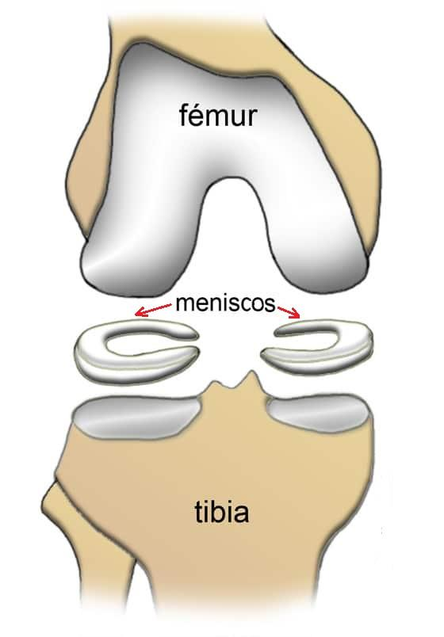
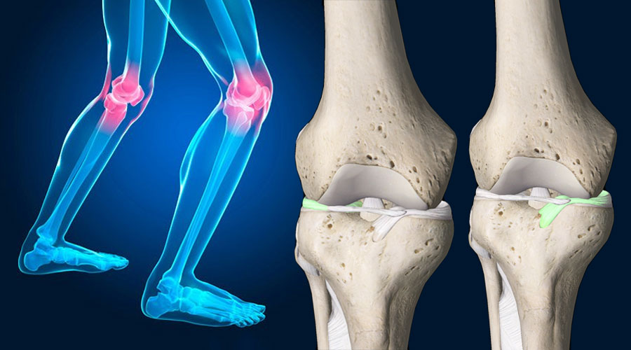
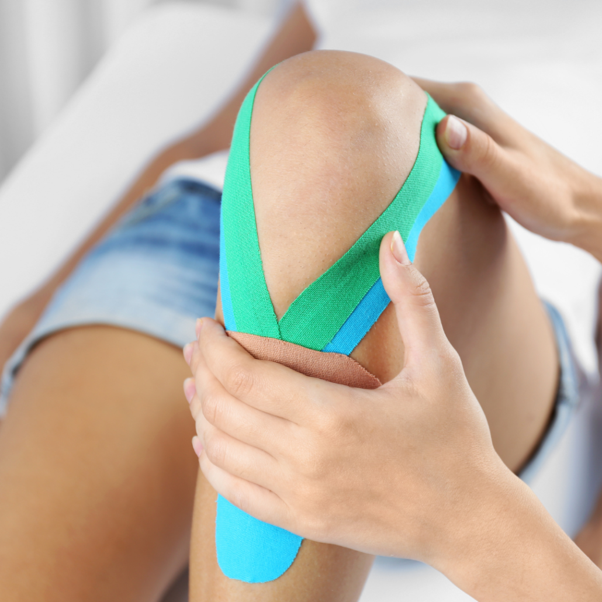

Menisco
Los meniscos son dos piezas de cartílago en forma de "C" ubicadas en la rodilla, entre el fémur y la tibia. Su función principal es actuar como amortiguadores, absorbiendo impactos y distribuyendo el peso del cuerpo de manera uniforme para proteger la articulación.

Lesiones comunes del menisco
Las lesiones del menisco son bastante frecuentes, especialmente en deportistas. Las más comunes son:
- Desgarro del menisco: puede ocurrir por un trauma directo o por el desgaste natural con el tiempo.
- Lesión por desgaste: a menudo se produce en personas mayores debido al desgaste progresivo del cartílago.

Síntomas
Los síntomas de las lesiones del menisco pueden incluir:
- Dolor al caminar o doblar la rodilla.
- Sensación de bloqueo.
- Inflamación.

Tratamiento
Tratar las lesiones del menisco puede variar según la gravedad. Las opciones de tratamiento incluyen:
- Reposo y hielo: para lesiones leves.
- Fisioterapia: para fortalecer los músculos alrededor de la rodilla.
- Medicamentos antiinflamatorios: para reducir inflamación y dolor.
- Cirugía: artroscopia o sutura en casos graves para reparar o extirpar el menisco dañado.